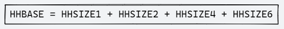
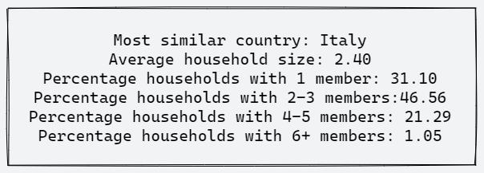

4. Synthetic Populations#
Synthetic populations are the primary input to activity-based travel demand models (ABMs), and are used as an alternative to the collection of microdata that is usually inacessible [RMK2007].
Tradesman uses PopulationSim, a Python native library to create its synthetic population and households.
Although a common procedure, generating the input data for synthetic populations can be tedious and time-consuming, so we have automated the process within Tradesman.
The creation of synthetic populations is divided in two steps within Tradesman:
Creation of input data (control totals and household samples)
Running of PopulationSim
This division allows the user to replace the sample households used by default with a more appropriate sample of households should that be available. The discussion on the source of the household sample used as default and how to replace it is done below.
4.1. PopulationSim Controls#
If necessary one can change the controls. In Tradesman, by default, we consider the following controls:
>>>
target,geography,seed_table,importance,control_field,expression
num_hh,TAZ,households,10000000,HHBASE,(households.WGTP > 0) & (households.WGTP < np.inf)
hh_size_1,REGION,households,5000,HHSIZE1,households.NP == 1
hh_size_2_3,REGION,households,5000,HHSIZE2,(households.NP == 2) | (households.NP == 3)
hh_size_4_5,REGION,households,5000,HHSIZE4,(households.NP == 4) | (households.NP == 5)
hh_size_6_plus,REGION,households,5000,HHSIZE6,households.NP >= 6
male_1,TAZ,persons,100000,POPM1,(persons.AGEP == 0) & (persons.SEX == 1)
male_2,TAZ,persons,100000,POPM2,(persons.AGEP >= 1) & (persons.AGEP < 5) & (persons.SEX == 1)
male_3,TAZ,persons,100000,POPM3,(persons.AGEP >= 5) & (persons.AGEP < 10) & (persons.SEX == 1)
male_4,TAZ,persons,100000,POPM4,(persons.AGEP >= 10) & (persons.AGEP < 15) & (persons.SEX == 1)
male_5,TAZ,persons,100000,POPM5,(persons.AGEP >= 15) & (persons.AGEP < 20) & (persons.SEX == 1)
male_6,TAZ,persons,100000,POPM6,(persons.AGEP >= 20) & (persons.AGEP < 25) & (persons.SEX == 1)
male_7,TAZ,persons,100000,POPM7,(persons.AGEP >= 25) & (persons.AGEP < 30) & (persons.SEX == 1)
male_8,TAZ,persons,100000,POPM8,(persons.AGEP >= 30) & (persons.AGEP < 35) & (persons.SEX == 1)
male_9,TAZ,persons,100000,POPM9,(persons.AGEP >= 35) & (persons.AGEP < 40) & (persons.SEX == 1)
male_10,TAZ,persons,100000,POPM10,(persons.AGEP >= 40) & (persons.AGEP < 45) & (persons.SEX == 1)
male_11,TAZ,persons,100000,POPM11,(persons.AGEP >= 45) & (persons.AGEP < 50) & (persons.SEX == 1)
male_12,TAZ,persons,100000,POPM12,(persons.AGEP >= 50) & (persons.AGEP < 55) & (persons.SEX == 1)
male_13,TAZ,persons,100000,POPM13,(persons.AGEP >= 55) & (persons.AGEP < 60) & (persons.SEX == 1)
male_14,TAZ,persons,100000,POPM14,(persons.AGEP >= 60) & (persons.AGEP < 65) & (persons.SEX == 1)
male_15,TAZ,persons,100000,POPM15,(persons.AGEP >= 65) & (persons.AGEP < 70) & (persons.SEX == 1)
male_16,TAZ,persons,100000,POPM16,(persons.AGEP >= 70) & (persons.AGEP < 75) & (persons.SEX == 1)
male_17,TAZ,persons,100000,POPM17,(persons.AGEP >= 75) & (persons.AGEP < 80) & (persons.SEX == 1)
male_18,TAZ,persons,100000,POPM18,(persons.AGEP >= 80) & (persons.SEX == 1)
female_1,TAZ,persons,100000,POPF1,(persons.AGEP == 0) & (persons.SEX == 2)
female_2,TAZ,persons,100000,POPF2,(persons.AGEP >= 1) & (persons.AGEP < 5) & (persons.SEX == 2)
female_3,TAZ,persons,100000,POPF3,(persons.AGEP >= 5) & (persons.AGEP < 10) & (persons.SEX == 2)
female_4,TAZ,persons,100000,POPF4,(persons.AGEP >= 10) & (persons.AGEP < 15) & (persons.SEX == 2)
female_5,TAZ,persons,100000,POPF5,(persons.AGEP >= 15) & (persons.AGEP < 20) & (persons.SEX == 2)
female_6,TAZ,persons,100000,POPF6,(persons.AGEP >= 20) & (persons.AGEP < 25) & (persons.SEX == 2)
female_7,TAZ,persons,100000,POPF7,(persons.AGEP >= 25) & (persons.AGEP < 30) & (persons.SEX == 2)
female_8,TAZ,persons,100000,POPF8,(persons.AGEP >= 30) & (persons.AGEP < 35) & (persons.SEX == 2)
female_9,TAZ,persons,100000,POPF9,(persons.AGEP >= 35) & (persons.AGEP < 40) & (persons.SEX == 2)
female_10,TAZ,persons,100000,POPF10,(persons.AGEP >= 40) & (persons.AGEP < 45) & (persons.SEX == 2)
female_11,TAZ,persons,100000,POPF11,(persons.AGEP >= 45) & (persons.AGEP < 50) & (persons.SEX == 2)
female_12,TAZ,persons,100000,POPF12,(persons.AGEP >= 50) & (persons.AGEP < 55) & (persons.SEX == 2)
female_13,TAZ,persons,100000,POPF13,(persons.AGEP >= 55) & (persons.AGEP < 60) & (persons.SEX == 2)
female_14,TAZ,persons,100000,POPF14,(persons.AGEP >= 60) & (persons.AGEP < 65) & (persons.SEX == 2)
female_15,TAZ,persons,100000,POPF15,(persons.AGEP >= 65) & (persons.AGEP < 70) & (persons.SEX == 2)
female_16,TAZ,persons,100000,POPF16,(persons.AGEP >= 70) & (persons.AGEP < 75) & (persons.SEX == 2)
female_17,TAZ,persons,100000,POPF17,(persons.AGEP >= 75) & (persons.AGEP < 80) & (persons.SEX == 2)
female_18,TAZ,persons,100000,POPF18,(persons.AGEP >= 80) & (persons.SEX == 2)
For each sex and age bracket, we create a control variable, considering the geography level of TAZ. For both women and men, we have 18 variables, named POPF and POPM, for female and male residents. For TAZs we also consider the expected number of households.
In the following section, we discuss the premisses of the model and explain how the expected number of households was calculated. Finally, we have the controls by REGION, an upper level. For regional control, we consider the expected number of households of different sizes.
4.2. Tradesman model premises#
To create a population sample for each country, we will use PUMS data for the state of Texas. Public Use of Microdata Sampe (aka PUMS) allow data users to create estimates for user defined characteristics. More information can be found in its webpage. We cleaned up the data, removing households with no persons (NP = 0), institutional and non-institutional types of household (TYPEHUGQ > 1), and created a hhnum column to represent the household number, given that SERIALNO column has different types of data.
Since the population of some countries is smaller than the sample and presents a populational distribution different than the sample, we split the Texas sample population into 4 different buckets, each one containing different size households. The number of buckets is related to the information on household size provided by the United Nations Population Division studies. To build our sample, we draw a number between 0 and 1, until the number of draws equals 2% of the population. Each number drawn is then associated with one of the buckets, and at the end, the total numbers associated with each bucket are added up. This number represents the total number of households of each size that must be drawn from each bucket. The sample is then drawn and we proceed to build the models with synthetic population.
The PopulationSim library requires a control file to run. In the control file, one can specify and check the requirements for the synthetic population. The only mandatory requirement for generating a synthetic population, is to provide the right number of households in each geography, and this specification is made at the lowest level. The lowest level in an AequilibraE model is the TAZs (Traffic Analysis Zones), however, the data necessary to estimate the total households is available only in the upper level. Once again, we will use the UN Population Division household composition to fulfill this requirement, with the underlying hypothesis that the family size distribution would be equal for all TAZs in the country.
As there is no data available for all countries or autonomous regions, for countries that are not present in the sample, we considered their household information to be similar to their closest (and most similar) neighbors. As there are many data sources available in the Population Division sheet, we kept the most recent data for each country, as long as it had information about the total number of households.
The total number of households in each TAZ is a sum of all households with different sizes. To match the information provided by the UN, we consider households with 1 person (HHBASE1), 2 to 3 persons (HHBASE2), 4 to 5 persons (HHBASE4), and with more than 6 persons (HHBASE6). Hence, we sum all population by sex and age in the zone, divide by the average number of persons in the household, and multiply by the percentage of households of each size expected for the country. Finally, we sum the integer expected values for each household size to obtain the mandatory expected number of households in the TAZ (HHBASE).
{kind=link}
As we currently do not have validation data to assess the quality of the synthetic populations created, we use the following variables from the UN Population Division file to validate the population:
Percentage of households with at least one person under 15 years old;
Percentage of households with at least one person under 18 years old;
Percentage of households with at least one person under 20 years old;
Percentage of households with at least one person over 60 years old;
Percentage of households with at least one person over 65 years old;
Percentage of households with at least one person under 15 and one person over 60;
Percentage of households with at least one person under 15 and one person over 65;
Percentage of households with at least one person under 18 and one person over 60;
Percentage of households with at least one person under 18 and one person over 65;
Percentage of households with at least one person under 20 and one person over 60;
Percentage of households with at least one person under 20 and one person over 65.
As part of the validation process, we also run the validation process presented by the development team of PopulationSim, available here.
4.3. Example#
San Marino is one of the smallest countries in the world. As it has no data in the UN Population Division sheet, we consider its informations to be like the nearest or most similar country, in this case, Italy. The average household size and household composition are:
{kind=link}
A zone in San Marino with 4,718 inhabitants would have 611 households with 1 member (HHBASE1), 915 households with 2-3 members (HHBASE2), 419 houeholds with 4-5 members (HHBASE4), and 21 households with 6 or more members (HHBASE6). Hence we would expect 1,966 houeholds within the TAZ.
As for the number od households types by region, we sum the values of HHBASE1, HHBASE2, HHBASE4, and HHBASE6 across all TAZs.